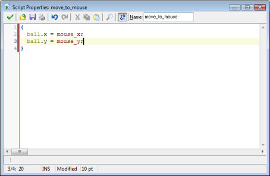
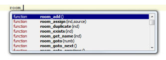
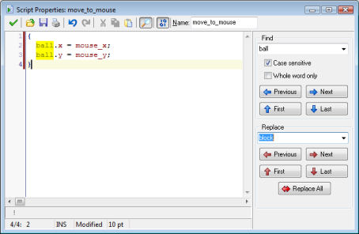
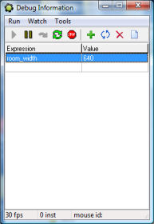

Game Maker has a built-in programming language called GML. Once you become more familiar with Game Maker and want to use it to its fullest extend, it is advisable to start learning to use this language. For more details in the GML language see Part 4 of this documentation.
There are two ways to use the language. First of all you can create scripts. These are pieces of code to which you give a name. They are shown in the resource tree and can be saved to a file and loaded from a file. They can even be used to form a library that extends the possibilities of Game Maker. Alternatively, you can add a code action to some event and type a piece of code there. Adding code actions works in exactly the same way as adding scripts except for two differences. Code actions don't have a name and cannot use arguments. Also they have the well-known field to indicate to what objects the action should apply. For the rest you enter code in exactly the same way as in scripts. We recommend you to use scripts for all but simple pieces of code as Game Maker has many more features that deal with scripts. So we further concentrate on scripts in this chapter.
As stated before, a script is written with code in GML (the built-in programming language) and is meant to perform a particular task. Scripts can takes input-variables called arguments (sometimes called parameters). To execute a script from any event, you can use the script action. In the script action you specify the script you want to execute, together with the up to five arguments.
You can also execute a script from within a piece of code (a different script) in the same way you call a GM-function. In that case you can use up to 16 arguments. Scripts can return a value. This is often used to build calculating methods (mathematical methods). The return keyword is used for this. No code after the return keyword is executed! When a script returns a value, you can also use it as a function when providing values in other actions.
Scripts are extremely useful to extend the possibilities of Game Maker. This does though require that you design your scripts carefully. Scripts can be stored in files that can be added to your game. To import a script file, use the item Import scripts from the Scripts menu. To save your scripts in the form of a file use Export scripts. Script libraries are simple text files (although they have the extension .gml). Preferably don't edit them directly because they have a special structure.
To create a script in your game, choose Create Script from the Resources menu. A code editor will appear that will be described next.
When creating or editing a script (or a code action) the following code editor form will appear (in the example we already added a little script that computed the product of the two arguments).

At the top right you can indicate the name of the script. You should give all of your scripts a sensible name. Make sure the name only consists of letter, digits, and the _ symbol. It should not start with a digit. In this way you can use the script later as a function in code.
At the top you have a toolbar with some useful buttons. From left to right you have the OK button to close the editor, saving the changes, buttons to load the script from a text file, save it to a text file, and print it.
Next there are undo and redo buttons. The editor will basically remember all changes you did and you can undo them (or redo the undone changes). You can change the maximal number of undo operations in the Preferences. Here you can also indicate whether you want to group the undo operations (such that e.g. typing a line of text can be undone in one step) or that every keystroke is separate saved. You can use <Ctrl> + Z for undo and <Ctrl> + <Shift> + Z for redo.
Next to this there are buttons to cut, copy, and paste text, as you should be familiar with. The final two buttons are for finding and replacing and for code checking. These will be explained below in detail.
Below the toolbar there is the area where you can type the text. At the left there are the line numbers. (You can switch these on and off using the F9 key.) The line with the cursor on it is marked in bold. The dark red bar behind certain line numbers indicated that these lines have changed. You will notice that you can type text anywhere on the lines. So a line does not really have an end. This tends to be useful when alligning text. There are many editing possibilities, that will be described below.
At the bottom there is the status bar. This shows from left to right the current line number, total number of lines and cursor position. Whether you are in Insert mode or Overwrite mode. (In Overwrite mode also the cursor chnanges to make it clear that you are overwriting the existing text.) Next there is the point size for the font used. You can use F7 and F8 to decrease or increase the font size. (You have more control over the font size and type in the Preference.)
The editor has many editing possibilities. Some of these can also be accessed through the pop-up menu that appears when you press the right mouse button. Here are the most important ones:
As you might have noticed, parts of the script text are colored. The editor knows about existing objects, built-in variables and functions, etc. Color- coding helps a lot in avoiding mistakes. In particular, you see immediately if you misspelled some name or use a keyword as a variable. If you don't like the color coding, in the Preferences you can switch it on and off (you can also use F10). In the Preferences you can also change the color for the different components of the code.
Game Maker contains many built-in functions and variables and you add your own resources and scripts to this. So it might be hard to remember all of them. Fortunately the editor helps you with this. When you type part of a name (at least two characters) and wait a little, a list is shown of all possibilities. For example, as follows:

You can continue typing and the list will adapt. You can use the up and down keys to scroll through the list and press Enter to replace the text you are typing with the selected function or variable name.
You can switch this feature on and off in the preferences. You can always force the list to appear by pressing <Ctrl> + Space.
A second form of help is given when you are typing in the arguments for a function. In this case, in the status bar at the bottom the function with its arguments is given. The current argument you are typing is shown in bold. In this way you will never forget arguments or get the order wrong.
It is common that you want to find some piece of text in your code or replace some text with another one. To this end press the Find button in the toolbar. A panel will show up at the right of the form, as follows:

You can type the find string at the top. Note that in the code all occurrences of the find string are immediately shown with a yellow background. (You can switch this off in the Preferences.) As usual you can indicate whether the search must be case sensitive (which is normally what you want as variable and function names in GML are also case sensitive) and whether you want to only search for whole words. Note that the editor remembers your most recent searches.
With the buttons with the blue arrows you can now move to the previous, next, first, and last occurrence of the find string. It will be selected in the text such that you can e.g. delete it.
When you want to replace occurrences, also type a text in the replace box. Now you can use the buttons to replace the previous occurrence, the next, the first, the last, or all occurrences of the find text. Remember you can always use Undo to undo the replacements.
Code snippets are small pieces of code that you will often use. You can add them in the code through the snippet menu. To this end press F2. A menu appears from which you can select the snippet. It will be inserted at the cursor in your code. Some pieces consists of capital letters only. These must still be replaced by you. The first one is selected for replacement. To replace another, simply double click on it.
You can define your own code snippets if you want. The snippets are stored in the file snippets.txt in the folder in which Game Maker is installed. You can edit this file with any text editor. Each snippet is on a separate line and there should be no blank lines. It starts with the name of the snippet (shown in the menu) followed by the colon (:) followed by the actual snippet. Use # for a newline and put the text that needs to be selected first between | symbols. See the examples that are already in the file. (Better make a backup of it before you start changing it.)
In the toolbar at the top there is a button with which you can switch error checking on or off. When error checking is on, Game Maker constantly tests the code you are typing and reports the first error it finds at the bottom of the window. Also the line number for the line with the error is drawn in red. You can click on the error message to go to the correct line and position to correct the error. Note that not all aspects can be tested at this stage but the syntax of your script will be tested, together with the existence of functions used.
When you start typing a script, error checking might be annoying so you can switch it off. But when the script is almost ready you better switch it on to correct all the errors. Note that also the color coding will help you catch errors. Finally, when you put your cursor at a bracket the editor will show you the corresponding opening or closing bracket. If it cannot find it, it is shown in red. (You can switch this off in the Preferences.)
When creating scripts you can easily make mistakes. Always test the scripts by using the error checking button. However, this will not catch all errors. So you will need to run the game to test your code.
When an error occurs during the execution of a script this is reported, with an indication of the type of error, the script or action it occurs in, and the line and position. Rarely you will see a popup with the text "Unexpected error occurred during the game". This error message indicate that some problem occurred in windows or in the hardware. Often the reason for this is infinite recursion, lack of memory or insufficient hardware, drivers or firmware. Generally speaking, these errors have to do with problems outside the Game Maker environment.
If you need to check things more carefully, you can run the game in debug mode. Now a form appears in which you can monitor lots of information in your game.

Under the Run menu you can pause the game, run it step by step and even restart it. Under the Watch menu you can watch the value of certain expressions. Use Add to type in some expression whose value is shown in each step of the game. In this way you can see whether your game is doing things the right way. You can watch many expressions. You can save them for later use (e.g. after you made a correction to the game). Under the Tools menu you find items to see even more information. You can see a list of all instances in the game, you can watch all global variables (well, the most important ones) and the local variables of an instance (either use the object name or the id of the instance). You can also view messages which you can send from your code using the function show_debug_message(str). Finally you can give the game commands and change the speed of the game. If you make complicated games you should really learn how to use the debug options.